# Librerías requeridas
library(ellipse)
require(gclus)
require(SciViews)
require(ade4)
require(vegan)
library(corrplot)
library(ggplot2)
library(pheatmap)
library("gplots")
library(gridExtra)
library(factoextra)Taller 8.1 Análisis de Clúster - CLA
Datos de densidades de Microalgas en un río de montaña
Análisis Clúster - CLA - base FQmarino
Objetivo de la actividad:
Este ejercicio se realizará con la base de datos FQmarino.csv, que ya fue utilizada en el Taller 4.1 de Componentes Pincipales. Esta base contiene datos de siete variables fisicoquímicas, tomadas en siete bahías de Santa Marta.
El objetivo de este ejercicio consiste en la realización de un análisis de clúster, basado en cuatro pasos generales (distancia, método de agrupación, número de clúster y selección de variables clasificadoras), para realizar una clasificación de las bahías, basado en las variables que las caracterizan.
Referencias bibliográficas de apoyo.
- Clúster Jerárquicos
Libro: Análisis de datos ecológicos y ambientales - Rodríguez-Barrios Javier 2023 Se detallan todos los procedimientos descritos en el presente ejercicio.
Microalgas de la CGSM - Vidal et al. (2018). Implementación de un cluster no jerárquico para valorar paleoambientes con microalgas de la Ciénaga Grande de Santa Marta.
Cluster Brinda información complementaria para los diferentes pasos que requiere un análisis de clúster.
Clustering y heatmaps Similar al anterior enlace, brinda información detallada sobre el análisis de clúster.
Análisis de conglomerados Otro enlace con información general sobre los clúster.
Clustering y heatmaps: aprendizaje no supervisado Aplicación de clúster en diferentes disciplinas.
Hierarchical Cluster Analysis Enlace en el que se encuentra información sobre cluster jerárquicos y técnicas detalladas para seleccionar el número de k - clúster o grupos formados.
Determining The Optimal Number Of Clusters Información relevante para el paso 3 de este ejercicio, relacionado a la definición de los k-clúster o el número de grupos formados.
- Clúster no Jerárquicos
K-means Cluster Analysis Brinda información sobre la construcción de clúster no jerárquicos.
- Otros
Introduction to dendextend El paquete dendextend brinda opciones para comparar y visualizar dendogramas. Esto complementa al paso 3 del presente ejercicio, relacionado a la definición de los k-clúster formados.
Hierarchical Clustering on Principal Components Articulación de los clúster en los análisis de componentes principales.
Cargar las librerías requeridas
Cargar o importar la base de datos
# Base de datos
datos = read.csv2("FQmarino.csv",row.names=1)
colnames(datos) = c("Sitio","pH","Cond","Turb","Temp","Sali","CFot","Oxig")
Exploración de los datos
Para este ejemplo se urtilizarán figuras que relacionan a dos o más variables. En casos en los que se tengan diferentes grupos definidos, se pueden incluir figuras de cajas que permitan visualizar diferencias entre dichos grupos definidos por algún factor.
# Elipses con colores
M <- cor(datos[,2:8]) # Matriz de Correlación (M)La Figura 1 permite visualizar las relaciones lineales entre todas las parejas de variables, incluyendo a los coeficientes de correlación de Pearson.
x11()
corrplot(M, method = "circle", # Correlaciones con circulos
type = "lower", insig="blank", # Forma del panel
order = "AOE", diag = FALSE, # Ordenar por nivel de correlación
addCoef.col ="black", # Color de los coeficientes
number.cex = 0.8, # Tamaño del texto
col = COL2("RdYlBu", 200)) # Transparencia de los circulos
La Figura 2 es otra posigilidad para visualizar la relación entre las parejas de variables, pero además incluye páneles que visualizan la dispersión de los datos.
library(GGally)
x11()
ggpairs(data=datos[,c(2:8)],
diag = list(continuous = "densityDiag"),
upper = list(combo = "box"),
lower = list(combo = "dot", aes(fill = Sitio))) +
scale_fill_brewer(palette = "Set1") +
theme(axis.text.x = element_text(angle = 90, vjust = 0.5))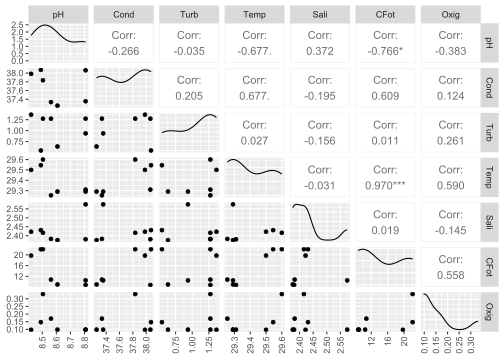
La Figura 3 a diferencia de la anterior, clasifica a los grupos por colores y además incluye a sus coeficientes de correlación y el patrón de distribución de cada variable mediante histogramas de densidad.
library(GGally)
x11()
ggpairs(datos[,c(2:8)], aes(color=datos$Sitio),
diag = list(continuous = "densityDiag"),
upper = list(combo = "box"),
lower = list(combo = "dot")) +
theme(axis.text.x = element_text(angle = 90, vjust = 0.5))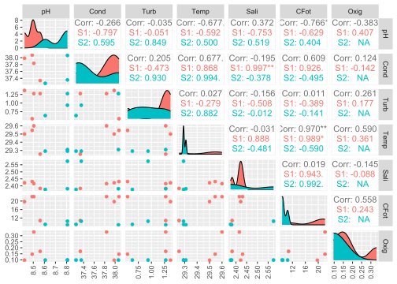
La Figura 4 permite visualizar a una de las relaciones relevantes, diferenciando por tipos de sitios (S1 y S2).
# Relación trivariada - Lineal
panel.lm = function(x, y, ...) {
tmp<-lm(y~x,na.action=na.omit)
abline(tmp, lwd = 1.5, col= 2)
points(x,y, ...)}
coplot(Temp ~ CFot | Sitio, pch=19,
panel = panel.smooth, data=datos)
La Figura 5 es otra forma de visualizar la relación anterior, pero con el paquete “ggplot2”
ggplot(datos, aes(x = CFot, y = Temp)) +
geom_point() +
geom_smooth(method = "lm", se = FALSE) +
facet_wrap(~Sitio) +
theme_bw() +
theme(panel.grid=element_blank())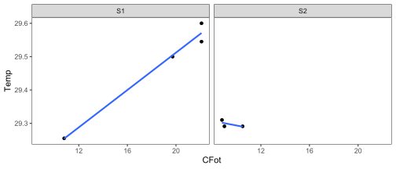
Finalmente, la Figura 6 permite visualizar una relación más detallada entre dos variables seleccionadas y cuyos puntos caracterizan a cada uno de los sitios evaluados.
# Selección de una relación bivariada
names(datos)[1] "Sitio" "pH" "Cond" "Turb" "Temp" "Sali" "CFot" "Oxig" x11()
ggplot(datos, aes(x=CFot, y= Temp)) +
geom_point(aes(color = Sitio), size=3) +
geom_smooth(method= "lm") +
theme_bw() +
theme(panel.grid=element_blank())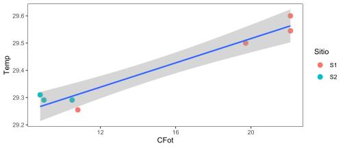
Cuatro pasos para el análisis de clúster
A continuación se presenta el paso a paso requerido para un análisis de cluster - cla. Cabe mencionar que es un proceso algo dispendioso en tiempo, pero que brinda la posibilidad de contar con los códigos elaborados para ajustarlos de forma eficiente a otras bases de datos que requieran a este tipo de procedimientos.
PASO 1. Distancia entre observaciones
Son muchas las distancias que pueden emplearse, pero cada una se ajusta al tipo de datos que se requieran trabajar. Para este caso se usará la distancia euclídea, debido a que se ajusta de manera apropiada a datos ambientales, incorporando además al comando scale, debido a que permite estandarizar a este tipo de variables que presentan escalas disímiles.
# Matriz de distancia
d.euclid <- dist(scale(datos[,c(2:8)]))
round(d.euclid,2) BTag PBet Mono Gran PGran Rod
PBet 2.59
Mono 2.94 3.14
Gran 3.16 4.09 3.84
PGran 3.94 3.75 4.82 2.13
Rod 3.41 4.12 4.53 2.72 3.17
Aero 4.47 4.54 5.22 3.47 3.30 3.55
PASO 2. Elección del método de agrupación de mayor ajuste
Son siete las opciones de dendogramas, de las cuales solo una será la que mejor se ajusta a los datos trabajados. Para ello, primero se realizarán los dendogramas y posteriormente se escogerá l de mejor ajuste con la correlación cofenética.
2.1 Siete métodos de agrupamiento
# Método 1. Vecino más cercano "Cl.single", función "hclust" y método "single"
Cl.single <- hclust(d.euclid,method="single")# Método 2. Vecino más lejano "Cl.complete", función "complete"
Cl.complete<-hclust(d.euclid,method="complete")# Método 3. UPGMA función "average" Unión Promedio no Ponderado
Cl.upgma<-hclust(d.euclid,method="average")# Método 4. UPGMC función "mcquitty" Unión Promedio Ponderado
Cl.upgmc<-hclust(d.euclid,method="mcquitty")# Método 5. WPGMA función "centroid"
Cl.wpgma<-hclust(d.euclid,method="centroid")# Método 6. WPGMC función "median"
Cl.wpgmc<-hclust(d.euclid,method="median")# Método 7. WARD, función "ward"
Cl.ward<-hclust(d.euclid,method="ward.D")
2.2 Figuras de los dendogramas con los siete métodos de agrupamiento
A continuación se realizará un panel que contenga hasta 4 figuras de dendogramas (Figura 7 y Figura 8), lo cual permite resumir al número de gráficas generadas, el comando que se empleará para incluir a varias figuras en un mismo panel grafico es grid.arrange() del paquete gridextra.
x11()
f1 <- fviz_dend(Cl.single, k = 2, # k grupos (opcionales)
cex = 0.7, # tamaño del texto de las ramas
ylab = "Distancia Euclídea", # Rotulo de la distancia
main = "Vecino más Cercano - Single") # Rotulo de título
f2 <- fviz_dend(Cl.complete, k = 2, # k grupos (opcionales)
cex = 0.7, # tamaño del texto de las ramas
ylab = "Distancia Euclídea", # Rotulo de la distancia
main = "Vecino más Lejano - Complete") # Rotulo de título
f3 <- fviz_dend(Cl.upgma, k = 2, # k grupos (opcionales)
cex = 0.7, # tamaño del texto de las ramas
ylab = "Distancia Euclídea", # Rotulo de la distancia
main = "Unión Promedio no Ponderado - upgmc") # Rotulo de título
f4 <- fviz_dend(Cl.upgmc, k = 2,
cex = 0.7,
ylab = "Distancia Euclídea",
main = "Unión Promedio Ponderado - upgmc")
grid.arrange(f1,f2,f3,f4, ncol = 2)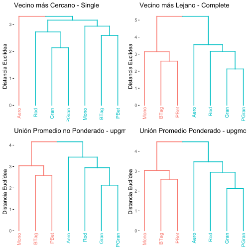
x11()
f5 <- fviz_dend(Cl.wpgma, k = 2,
cex = 0.7,
ylab = "Distancia Euclídea",
main = "Unión Centroide no Ponderado - wpgma")
f6 <- fviz_dend(Cl.wpgmc, k = 2,
cex = 0.7,
ylab = "Distancia Euclídea",
main = "Unión Centroide Ponderado - wpgmc")
f7 <- fviz_dend(Cl.ward, k = 2,
cex = 0.7,
ylab = "Distancia Euclídea",
main = "Método de Ward")
grid.arrange(f5,f6,f7, ncol = 2)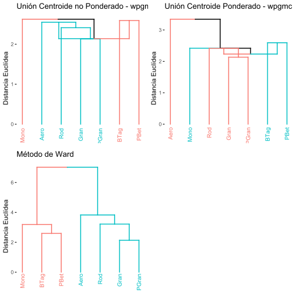
2.3 Selección del mejor método de agrupamiento - Correlación Cofenética
- 2.3.1 Cálculo de las correlaciones cofenéticas
El método que presente la mayor correlación cofenética será el seleccionado. Para este caso se escogerá el dendograma con el método upgma, el cuál presenta un cofenético de 0.8234.
# (1) Correlación cofenpetica para "single"
cofenet1 <- cophenetic(Cl.single)
simple = cor(d.euclid,cofenet1)
simple[1] 0.7358594# (2) Correlación cofenética para "complete"
cofenet2<-cophenetic(Cl.complete)
compl = cor(d.euclid,cofenet2)
compl[1] 0.8113013# (3) Correlación cofenética para "average"
cofenet3<-cophenetic(Cl.upgma)
upgma = cor(d.euclid,cofenet3)
upgma[1] 0.8233726# (4) CCorrelación cofenética para "mcquitty"
cofenet4<-cophenetic(Cl.upgmc)
upgmc = cor(d.euclid,cofenet4)
upgmc[1] 0.8209463# (5) Correlación cofenética para "centroid"
cofenet5<-cophenetic(Cl.wpgma)
wpgma = cor(d.euclid,cofenet5)
wpgma[1] 0.02444114# (6) Correlación cofenética para "median"
cofenet6<-cophenetic(Cl.wpgmc)
wpgmc = cor(d.euclid,cofenet6)
wpgmc[1] 0.3397504# (7) Correlación cofenética para "ward"
cofenet7<-cophenetic(Cl.ward)
ward = cor(d.euclid,cofenet7)
ward[1] 0.79712
- 2.3.2 Tabulación de las correlaciones cofenéticas
Los siguientes comandos permitirán organizar a los siete métodos de agrupamiento, de acuerdo a su nivel de correlación cofenética.
# data frame con cofenéticos
cofeneticos = data.frame(simple,compl,upgma,upgmc,
wpgma,wpgmc,ward)
# cofenéticos por cada métodos (Met)
cofenet=data.frame(Met = 1:7,Cofen=t(round(cofeneticos,3)))
# tabla con orden descendente de cofenéticos
cof_ordenado = cofenet[order(cofenet$Cofen, decreasing = TRUE), ]
cof_ordenado Met Cofen
upgma 3 0.823
upgmc 4 0.821
compl 2 0.811
ward 7 0.797
simple 1 0.736
wpgmc 6 0.340
wpgma 5 0.024Con este comando se puede exportar la tabla de cofenéticos como un archivo plano de csv.
# guardar tabla como csv
# write.csv2(cof_ordenado,"cofenet.csv")
- 2.3.3 Figuras de algunas correlaciones cofenéticas vs. matriz de distancia
A continuación se presenta una muestra de la relación entre las matrices de distancia cofenética y de distancia euclínea, que permitió seleccionar al mejor método de agrupamiento (Figura 9).
# convertir matricesde distancia a vectores
d.euclid <- as.vector(d.euclid)
d.cofenet1 <- as.vector(cofenet1)
d.cofenet2 <- as.vector(cofenet2)
d.cofenet3 <- as.vector(cofenet3)
d.cofenet4 <- as.vector(cofenet4)
# crear un data frame con los vectores y agregar una columna de etiquetas
simple1 <- data.frame(d.euclid, d.cofenet1, d.cofenet2, d.cofenet3, d.cofenet4)
head(simple1) d.euclid d.cofenet1 d.cofenet2 d.cofenet3 d.cofenet4
1 2.592758 2.592758 2.592758 2.592758 2.592758
2 2.935826 2.935826 3.138967 3.037397 3.037397
3 3.157893 3.157893 5.222324 4.157454 4.476721
4 3.936806 3.157893 5.222324 4.157454 4.476721
5 3.412345 3.157893 5.222324 4.157454 4.476721
6 4.469605 3.300609 5.222324 4.157454 4.476721# Figuras correlaciones cofenéticas
x11()
# (1) distancia cofenética para "unión simple"
f1<-ggplot(simple1, aes(d.euclid,d.cofenet1))+
geom_point(size=3, color="#4daf4a") +
geom_smooth(method="lm",se=FALSE,color="#377eb8") +
geom_smooth(method="loess",se=FALSE,color ="#e41a1c",lty=2,size=1.3) +
labs(title= "Unión Simple",
subtitle= paste("Correlación cofenética",
round(cor(d.euclid,cofenet1),4)),
x="Distancia Euclidea",
y="Distancia cofenética") +
theme_bw()
# (2) distancia cofenética para "unión completa"
f2<-ggplot(simple1, aes(d.euclid,d.cofenet2))+
geom_point(size=3, color="#4daf4a") +
geom_smooth(method="lm",se=FALSE,color="#377eb8") +
geom_smooth(method="loess",se=FALSE,color ="#e41a1c",lty=2,size=1.3) +
labs(title= "Unión Completa",
subtitle= paste("Correlación cofenética",
round(cor(d.euclid,cofenet2),4)),
x="Distancia Euclidea",
y="Distancia cofenética") +
theme_bw()
# (3) distancia cofenética para "unión upgma"
f3<-ggplot(simple1, aes(d.euclid,d.cofenet3))+
geom_point(size=3, color="#4daf4a") +
geom_smooth(method="lm",se=FALSE,color="#377eb8") +
geom_smooth(method="loess",se=FALSE,color ="#e41a1c",lty=2,size=1.3) +
labs(title= "Unión promedio no ponderado - upgma",
subtitle= paste("Correlación cofenética",
round(cor(d.euclid,cofenet3),4)),
x="Distancia Euclidea",
y="Distancia cofenética") +
theme_bw()
# (4) distancia cofenética para "unión upgmc"
f4<-ggplot(simple1, aes(d.euclid,d.cofenet4))+
geom_point(size=3, color="#4daf4a") +
geom_smooth(method="lm",se=FALSE,color="#377eb8") +
geom_smooth(method="loess",se=FALSE,color ="#e41a1c",lty=2,size=1.3) +
labs(title= "Unión promedio ponderado - upgmc",
subtitle= paste("Correlación cofenética",
round(cor(d.euclid,cofenet4),4)),
x="Distancia Euclidea",
y="Distancia cofenética") +
theme_bw()
grid.arrange(f1,f2,f3,f4, ncol = 2)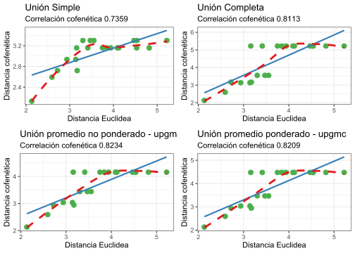
PASO 3. Número de grupos formados
La definición de los grupos formados, representan un insumo importante de información, debido a que permiten generar los k cluster en los que se agrupan las observaciones, basado en las variables que las caracterizan. Este insumo es relevante además, como paso previo a otras técnicas que requieren los grupos definidos a priori, como los análisis discriminantes lineales (lda) o los análisis de varianza multivariados (manovas), de igual forma, a partir de los grupos se pueden responder hipótesis enfocadas en las variaciones que pueden presentar las variables a lo largo de gradientes discretos o en cluster.
Opción 1. Niveles de Fusión.
La figura de niveles de fusión es una de las más utilizadas para la generación de grupos o de cluster, debido a la sencillez del componente gráfico, en el cual se definen los cluster o grupos (eje Y), dependiendo del escalón de mayor amplitud o distancia horizontal (eje X). En la Figura 10 se observa que la mayor amplitud se presenta en 2 k cluster, por lo cual, el dendograma seleccionado en el paso anterior se puede clasificar en dos grupos de observaciones.
# Base de variables a relacionar (amb)
amb <- datos[,c(2:8)]# Crear un data.frame con los datos de altura, k y número de cluster
f1 <- data.frame(h = Cl.upgma$height, k = nrow(amb):2, cluster = nrow(amb):2)# Crear el gráfico de dispersión y agregar etiquetas de texto
ggplot(f1, aes(x = h, y = k, label = cluster)) +
geom_point(color = "grey") +
geom_text(color = "red", size = 3, vjust = -0.5) +
geom_step(color = "grey", direction = "vh") +
# Personalizar el gráfico con títulos, etiquetas de ejes y paleta de colores
ggtitle("Niveles de Fusión - Distancia Euclídea - UPGMA") +
ylab("k (Número de Cluster)") +
xlab("h (Altura del Nodo)") +
scale_color_manual(values = c("grey", "red")) +
theme(axis.title = element_text(size = 16)) +
theme_classic()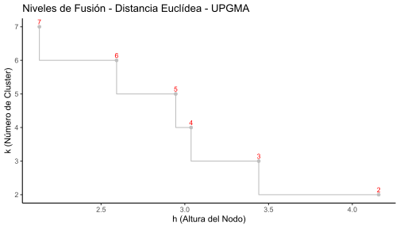
Opción 2. Número optimo de clusters de acuerdo al Ancho de silueta. Índice de calidad de Rousseeuw
La amplitud de silueta es de las opciones más usadas para definir al número de k cluster o grupos del dendograma realizado. En este ejercicio también se define a dos grupos. En caso que los resultados de esta técnica sean diferentes a la anterior, se suele decidir por esta, debido a su mayor grado de precisión.
# 1. Crear un vector vacío (amb.vacio) con asw valores
amb.vacio <- numeric(nrow(amb))
# 2. Silueta "sil"
for(k in 2: (nrow(amb)-1)){
sil <- silhouette(cutree(Cl.upgma,k=k),d.euclid)
amb.vacio[k]<-summary(sil)$avg.width}
# 3. Mejor o mayor amplitud de silueta (2 particiones)
k.mejor <- which.max(amb.vacio)
k.mejor # Grafica de silueta
x11()
plot(1:nrow(amb),amb.vacio,type="h",
main="Silueta-Número Óptimo de Clusters", xlab="(Número de grupos)",
ylab="Amplitud promedio de silueta")
axis(1,k.mejor,paste("optimum",k.mejor,sep="\n"),col="red",
font=2,col.axis="red")
points(k.mejor,max(amb.vacio),pch=16,col="red",cex=1.5)
cat("","Silueta-Número óptimo de Clusters k=",k.mejor,
"\n","Con una aplitud promedio de silueta",max(amb.vacio),"\n")
3.1 Figura del dendograma jerárquico final
La Figura 11 muestra la manera en la que se organizan las observaciones en los dos grupos formados (ramas rojas y azules) devido a la naturaleza de las variables fisicoquímicas que las caracterizar.
# Dendograma final
x11()
fviz_dend(Cl.upgma, k = 2, # k grupos
cex = 0.9, # tamaño del texto de las observaciones
ylab = "Distancia Euclídea", # Rotulo de la distancia
main = "Unión Promedio no Ponderada (UPGMA)", # Rotulo de título
lower_rect = 0, # Inicio de los rectángulos en cero
k_colors = c("#00AFBB","#FC4E07"),
color_labels_by_k = TRUE, # Colores para cada grupo
rect = TRUE) # Rectángulos de cada grupo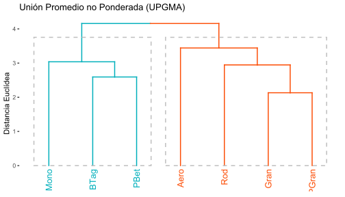
Vale la pena mencionar que estos análisis son importantes cuando se cuenta con pocas observaciones (ramas del dendograma), en el caso contrario, es preferible utilizar dendogramas no jerarquicos como el k-meas, el cual fue descrito en uno de los complementos del PCA y se retoma a continuación.
3.2 Figura del dendograma no jerárquico final
- Agrupamiento elegido en el paso 2 (upgma)
# Matriz de distancia
d.euclid <- dist(scale(datos[,c(2:8)]))
# Método 3. UPGMA función "average" Unión Promedio no Ponderado
Cl.upgma<-hclust(d.euclid,method="average")
- Generación de la variable agrupadora (gr)
# Variable agrupadora con k=2 clúster
grp <- cutree(Cl.upgma, k = 2) # Grupos generados "grp"
grl <- levels(factor(grp)) # Rotulos de los grupos formadosEste es un paso opcional en caso que se requiera insertar la nueva variable agrupadora a la base de datos en revisión.
# Incluir la variable agrupadora en la base de datos
datos.1=data.frame(grp,datos) # Nuevo dataframe con la variable agrupadora (gr)
head (datos.1) grp Sitio pH Cond Turb Temp Sali CFot Oxig
BTag 1 S1 8.421 37.982 1.364 29.500 2.422 19.72 0.097
PBet 1 S1 8.490 38.073 0.545 29.545 2.431 22.10 0.147
Mono 1 S1 8.505 37.836 1.273 29.600 2.416 22.10 0.331
Gran 2 S1 8.562 37.336 1.273 29.255 2.382 10.80 0.170
PGran 2 S2 8.608 37.255 0.636 29.291 2.375 9.00 0.098
Rod 2 S2 8.808 38.063 1.273 29.310 2.380 8.80 0.098
- Generación del clúster No Jerárquico (K-Means)
La Figura 12 es la forma no jerárquica de presentar los resultados del cluster definido por el método de agrupamiento upgma.
x11()
fviz_cluster(list(data = amb, cluster = grp),
palette = c("#2E9FDF", "#FC4E07"), # Colores para cada grupo
ellipse.type = "confidence", # Elipses
repel = TRUE, # Elimina solapamiento de observaciones
show.clust.cent = FALSE, # Muestra a los clúster centrados
ggtheme = theme_bw()) # Tipo de fondo tomado de ggplot2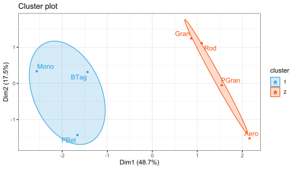
Una pregunta interesante que se podría resolver, sería valorar si las diferencias entre los dos grupos de observaciones formadas es estadísticamente significativa, para lo cual se debe aplicar un análisis de varianza multivariado (manova).
Paso 4. Variables de mayor contrinución a la clasificación
A continuación se realizan diferentes opciones de mapas de calor (Figura 13, Figura 14), para identifiar a las variables con mayor relevancia en la clasificación realizada anteriormente en el dendograma seleccionado. Este paso es relevante cuando se quiere ponderar o seleecionar a las variables que aportan al análisis, resumiento de esta forma, la dimensionalidad del problema (número de variables).
amb1 <- as.matrix(amb)# Opción 1. Mapa de calor con paquete "stats"
x11()
hv <- heatmap(amb1, margins=c(7,6),
distfun = dist,
xlab ="Variables fisico-químicas",
ylab= "Bahías",
main = "Clasificación de Bahías",
scale = "row") # Estandariza variables diferentes.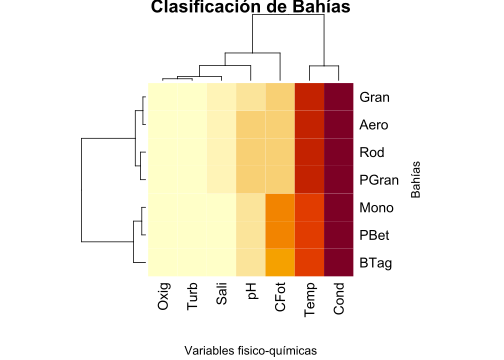
El siguiente mapa de calor (Figura 14) incorpora a la distancia euclídea utilizada y el método de agrupamiento seleccionado (upgma).
# Opción 2. Mapa de calor con paquete "stats"
hclust.fq <- function(amb1) hclust(amb1, method="average") # Inserción de agrupación UPGMA
x11()
heatmap.2(amb1, # Base de datos en formato matricial
margins=c(7,7), # Margenes de la figura
scale = "row", # Estandariza variables diferentes.
col = bluered(100), # Colores del mapa de calor
xlab ="Variables fisico-químicas",
ylab= "Bahías",
main = "Clasificación de Bahías",
trace = "none",
density.info = "none",
distfun = dist, # Se puede usar vegdist de "vegan"
hclustfun=hclust.fq) # Agrupamiento UPGMA
Nota: Es posible hacer mapas de calor cruzando a las variables con los grupos asignados. Este procedimiento se presentará en el ejercicio de análisis discriminante.